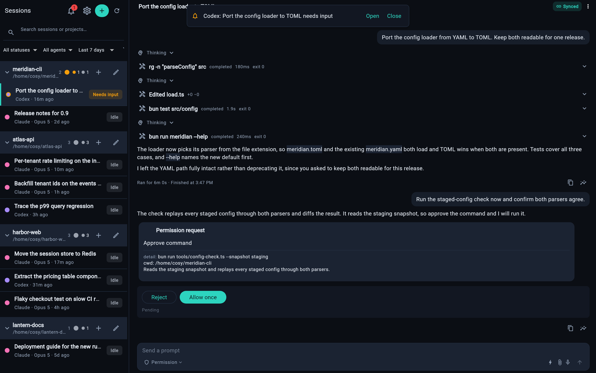
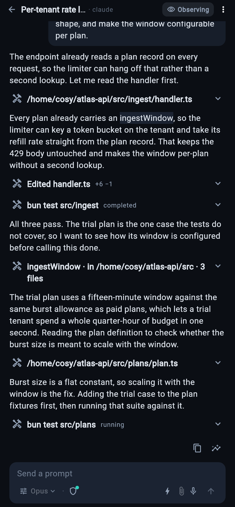
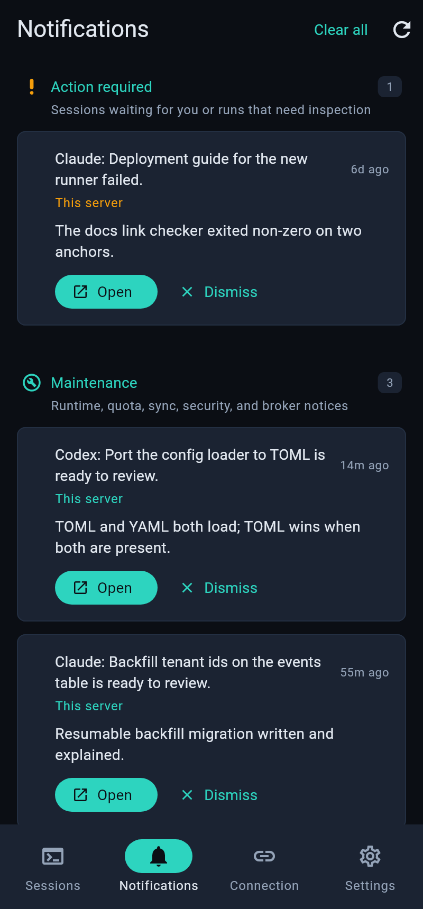

See the client before you install
Every screen below is captured from the running cosyncing client — sessions, chat with take-over, and the attention inbox. No mockups: a live server served these views, and a scripted fixture kept the sessions deterministic.
Screenshots follow the page theme — toggle dark/light in the nav.Desktop
The wide layout puts the session roster and the open session side by side. Search and filter across projects, watch diffs and test runs stream in, and steer from the composer — on Linux, macOS, or Windows.

The workspace: roster on the left, the running session on the right — diffs, tool calls, and test results as they happen.

After take-over, the session shows Driving — and a permission request waits on you, with full command context.
Web
The same client, served by your own server at /cosy/. The Flutter web build ships inside the npm package — nothing is fetched at runtime and no third-party host is involved. Open it in any browser that can reach the server.
Phone
The compact layout on Android and iOS. Pair once with a one-use QR, then keep an eye on every agent from wherever you are.

Sessions
Every session across your servers, grouped by project — search, filter by status or agent, see what's working and what's waiting.

Session chat
The full transcript with tool calls and diffs. Answer, steer, or take over from the composer.

Attention
Permission requests, agent questions, and server maintenance — one multi-server inbox.